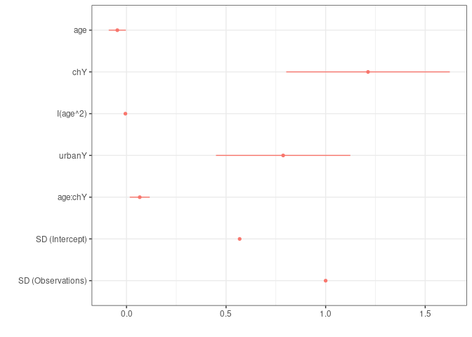
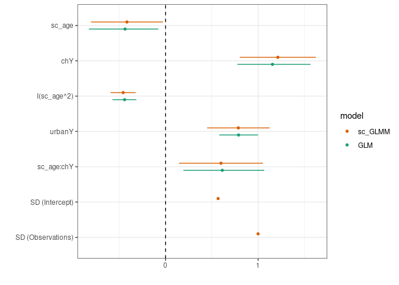

## graphics
library(ggplot2)
theme_set(theme_bw()+theme(panel.spacing=grid::unit(0,"lines")))
library(directlabels)
## modeling/coef plots
library(lme4)
library(broom)
library(broom.mixed)
library(dotwhisker)
library(ggstance) ## horizontal geoms
library(stargazer)
## manipulation
library(tidyverse)arm::coefplot, coefplot2dotwhiskerbroom + ggplot2 + ggstancedata(Contraception,package="mlmRev")
Contraception <- Contraception %>%
mutate(ch=factor(livch != 0, labels = c("N", "Y")))
m3 <- glmer(use ~ age * ch + I(age^2) + urban + (1 | urban:district),
data=Contraception, family=binomial)
ss <- stargazer(m3,type="html")| Dependent variable: | |
| use | |
| age | -0.046** |
| (0.022) | |
| chY | 1.213*** |
| (0.210) | |
| I(age2) | -0.006*** |
| (0.001) | |
| urbanY | 0.787*** |
| (0.172) | |
| age:chY | 0.066*** |
| (0.026) | |
| Constant | -1.341*** |
| (0.222) | |
| Observations | 1,934 |
| Log Likelihood | -1,177.237 |
| Akaike Inf. Crit. | 2,368.475 |
| Bayesian Inf. Crit. | 2,407.446 |
| Note: | p<0.1; p<0.05; p<0.01 |
Also see broom/broom.mixed + huxtable packages
gg0 <- dotwhisker::dwplot(m3)
print(gg0)
gg1 <- gg0+geom_vline(xintercept=0,lty=2)
print(gg0)arm::standardize, arm::rescale (handy but inefficient)binary.inputs: options for standardizing binary variables, default is ‘center’; ‘0/1’ keeps original scale; ‘-0.5,0.5’ rescales 0 as -0.5 and 1 as 0.5; ‘center’ subtracts the mean; and ‘full’ subtracts the mean and divides by 2 sd.
by_2sd)dotwhisker::dwplot(m3,by_2sd=FALSE)
Contraception <- Contraception %>%
mutate(sc_age=drop(scale(age)))
m3_sc <- update(m3,
. ~ sc_age * ch + I(sc_age^2) + urban + (1 | urban:district))dotwhisker::dwplot(m3_sc,effects="fixed")+
geom_vline(xintercept=0,lty=2)cc <- broom.mixed::tidy(m3_sc,effects="fixed")
print(cc,digits=3)
## # A tibble: 6 x 6
## effect term estimate std.error statistic p.value
## <chr> <chr> <dbl> <dbl> <dbl> <dbl>
## 1 fixed (Intercept) -1.34 0.222 -6.04 1.56e- 9
## 2 fixed sc_age -0.416 0.198 -2.10 3.57e- 2
## 3 fixed chY 1.21 0.210 5.79 7.17e- 9
## 4 fixed I(sc_age^2) -0.457 0.0690 -6.62 3.51e-11
## 5 fixed urbanY 0.787 0.172 4.57 4.88e- 6
## 6 fixed sc_age:chY 0.599 0.231 2.59 9.57e- 3
m3_fixed <- glm(
use ~ sc_age * ch + I(sc_age^2) + urban,
data=Contraception, family=binomial)
dotwhisker::dwplot(list(sc_GLMM=m3_sc,GLM=m3_fixed))+
geom_vline(xintercept=0,lty=2)+ scale_colour_brewer(palette="Dark2")
tidy()m3_res <- map(list(with_re=m3_sc,no_re=m3_fixed),tidy,
conf.int=TRUE) %>%
bind_rows(.id="model") %>%
mutate(term=factor(term,levels=unique(term))) %>%
filter(term!="(Intercept)")pd <- ggstance::position_dodgev(height=0.5)
(gg5 <- ggplot(m3_res,aes(x=estimate,y=term,colour=model))
+ geom_point(position=pd) + labs(y="")
+ ggstance::geom_linerangeh(aes(xmin=conf.low,xmax=conf.high),
position=pd)
+ scale_colour_brewer(palette="Dark2") + geom_vline(xintercept=0,lty=2))
## Warning: Removed 1 rows containing missing values (geom_linerangeh).m3_res_order <- mutate(m3_res,term=reorder(term,estimate))
gg5 %+% m3_res_order
## Warning: Removed 1 rows containing missing values (geom_linerangeh).broom, broom.mixed for more tidying optionstables are best suited for looking up specific information, and graphs are better for perceiving trends and making comparisons and predictions

## need read_table2() for 'irregular' data
dd <- read_table2("data/wei_tab5.5.txt")
head(dd)
## # A tibble: 6 x 11
## dataset r type MGHD.ERR MGHD.ARI MST.ERR MST.ARI `MI/MGHD.ERR`
## <chr> <dbl> <chr> <dbl> <dbl> <dbl> <dbl> <dbl>
## 1 sim1 0.05 est 0.0608 0.774 0.0688 0.771 0.121
## 2 sim1 0.05 sd 0.0292 0.0925 0.0557 0.0998 0.0302
## 3 sim1 0.1 est 0.0578 0.782 0.277 0.456 0.188
## 4 sim1 0.1 sd 0.0116 0.0412 0.0895 0.215 0.0392
## 5 sim1 0.2 est 0.0674 0.752 0.231 0.562 0.311
## 6 sim1 0.2 sd 0.0335 0.108 0.0604 0.105 0.0552
## # … with 3 more variables: `MI/MGHD.ARI` <dbl>, `MI/MST.ERR` <dbl>,
## # `MI/MST.ARI` <dbl>dd2 <- (dd
%>% gather(key=model,value=val,-c(dataset,r,type))
%>% separate(model,into=c("model","stat"),sep="\\.")
%>% spread(key=type,value=val) ## est + sd in a single row
)
head(dd2)
## # A tibble: 6 x 6
## dataset r model stat est sd
## <chr> <dbl> <chr> <chr> <dbl> <dbl>
## 1 sim1 0.05 MGHD ARI 0.774 0.0925
## 2 sim1 0.05 MGHD ERR 0.0608 0.0292
## 3 sim1 0.05 MI/MGHD ARI 0.594 0.0874
## 4 sim1 0.05 MI/MGHD ERR 0.121 0.0302
## 5 sim1 0.05 MI/MST ARI 0.607 0.098
## 6 sim1 0.05 MI/MST ERR 0.118 0.0341
simtab <- read.table(header=TRUE,text="
dataset distribution covstruc separation
sim1 MGHD VEE well-separated
sim2 MGHD VEE overlapping
sim3 MST VEI well-separated
sim4 MST VEI overlapping
sim5 GMM VEE well-separated
sim6 GMM VEE overlapping
")
dd3 <- dd2 %>% merge(simtab,by="dataset")gg1 <- (ggplot(dd3,aes(factor(r),est,colour=model))
+ geom_point()+geom_line(aes(group=model)) ## points and lines
## transparent ribbons, +/- 1 SD:
+ geom_ribbon(aes(ymin=est-sd,ymax=est+sd,group=model,fill=model),
colour=NA,alpha=0.3)
+ scale_y_continuous(limits=c(0,1),oob=scales::squish)
+ facet_grid(stat~distribution+covstruc+separation)
+ labs(x="r (proportion missing)",y="")
+ scale_colour_brewer(palette="Dark2") + scale_fill_brewer(palette="Dark2"))
geom_rect)tabulizer packagenm <- (read_csv(fn,skip=skip,n_max=n_header,col_names=FALSE)
%>% t() ## transpose
%>% as_tibble()
%>% mutate_all(zoo::na.locf)
%>% apply(MARGIN=1,paste,collapse="_")
)
main <- (read_csv(fn,skip=skip+n_header,
n_max=n_table,
col_names=FALSE, ...)
%>% setNames(nm)
)
pivot_longer(...) ## automatically separates according to patternGelman, Andrew. 2008. “Scaling Regression Inputs by Dividing by Two Standard Deviations.” Statistics in Medicine 27 (15): 2865–73. https://doi.org/10.1002/sim.3107.
———. 2011. “Why Tables Are Really Much Better Than Graphs.” Journal of Computational and Graphical Statistics 20 (1): 3–7. https://doi.org/10.1198/jcgs.2011.09166.
Gelman, Andrew, Cristian Pasarica, and Rahul Dodhia. 2002. “Let’s Practice What We Preach: Turning Tables into Graphs.” The American Statistician 56 (2): 121–30. http://www.tandfonline.com/doi/abs/10.1198/000313002317572790.
Schielzeth, Holger. 2010. “Simple Means to Improve the Interpretability of Regression Coefficients.” Methods in Ecology and Evolution 1: 103–13. https://doi.org/10.1111/j.2041-210X.2010.00012.x.
Wei, Yuhong. 2017. “Extending Growth Mixture Models and Handling Missing Values via Mixtures of Non-Elliptical Distributions.” Thesis. https://macsphere.mcmaster.ca/handle/11375/21987.